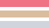

<div
  class="flex justify-between h-header fixed w-full top-0 z-10 lg:bg-opacity-0"
  [ngClass]="{
    'bg-background-dark': darkMode$ | async,
    'bg-background-light': !(darkMode$ | async)
  }"
>
  <div class="flex justify-start">
    <button class="ml-4 mt-4" (click)="goToMainPage()">
      
      
    </button>

    <div class="mt-4 flex items-start">
      <button class="ml-4 mr-2">
        <mat-icon
          [ngClass]="{
            'hover:text-yellow': !(darkMode$ | async),
            'hover:text-purple': (darkMode$ | async),
          }"
          (click)="darkModeToggled()"
          >{{ (darkMode$ | async) ? "mode_night" : "sunny" }}</mat-icon
        >
      </button>
      
      
    </div>
  </div>

  <div class="hidden md:flex items-center">
    <contact></contact>
  </div>

  <!-- Shown on medium screens and above -->
  <div class="hidden md:flex">
    <ng-container *ngFor="let route of navigationRoutes; let i = index">
      <button class="mx-4" mat-button (click)="goToPage(route.path)">
        <div
          class="border-b-2 border-opacity-0 border-white transform duration-500"
          [ngClass]="{
            'hover:border-b-primary-main' : i % 3 === 0,
            'hover:border-b-primary-second' : i % 3 === 1,
            'hover:border-b-primary-third' : i % 3 === 2,
          }"
        >
          {{ route.translationName | translate }}
        </div>
      </button>
    </ng-container>
  </div>
  <div class="flex justify-center items-center">
    <button (click)="drawerToggled()">
      
    </button>
  </div>
</div>
